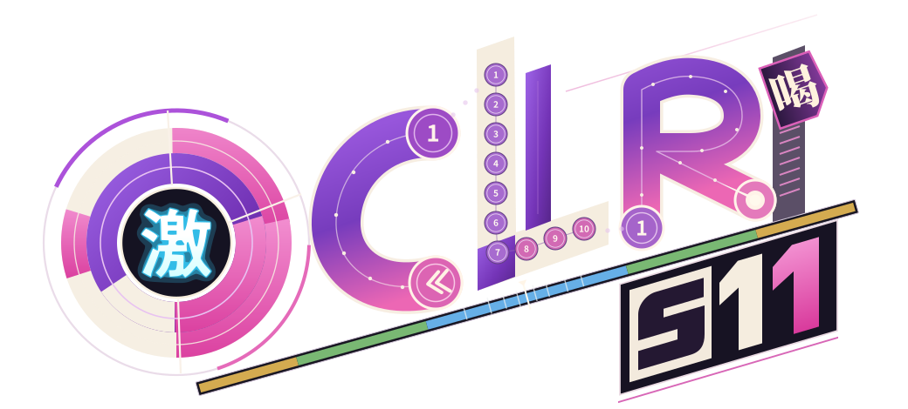

C：上端出发，沿弧线到下端返向。R：左下起点 → 向上 → 绕过圆弧 → 斜向右下结束。

O · 经典「激」
清除左侧孤立线和点阵填充。采用 osu! Legacy 默认皮肤原始字形的矢量轮廓。
C · 往返滑条
增加纵向高度，完整曲线连接首尾；下端逆向箭头指回轨道。
L · 连打串
十个连续编号的打击圈沿 L 的竖笔和底部排列，代替无意义的纹理。
R · 一笔滑条
左下的 1 是起点。竖笔、上部圆弧和右下斜笔共用一条连续路径。
分隔 · 准度条
黄、绿、蓝对称分区，中心零点、偏移标记和落点刻线沿斜轴分开字标与 S11。